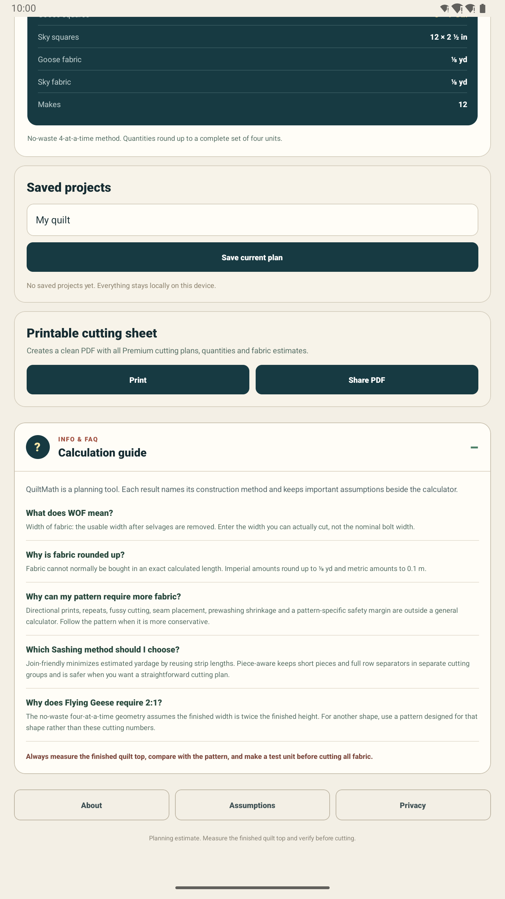

Visual calculation guides
The next design question is how to show where measurements come from without turning a compact calculator into a crowded diagram.

The first experiment
The Binding workflow is the starting point. Its illustration can identify quilt width and length, while dimension labels remain outside the drawing so they do not overlap the quilt itself.
What a useful guide should do
- Connect the entered measurements to a recognisable part of the quilt.
- Explain the cutting plan without hiding the exact numbers.
- Remain readable on phones, tablets and in both measurement systems.
- Stay lightweight and available without a network connection.
Not a replacement for the pattern
The goal is orientation, not a universal sewing pattern. Directional prints, repeats, fussy cutting and pattern-specific safety margins still require the quilter's judgement.